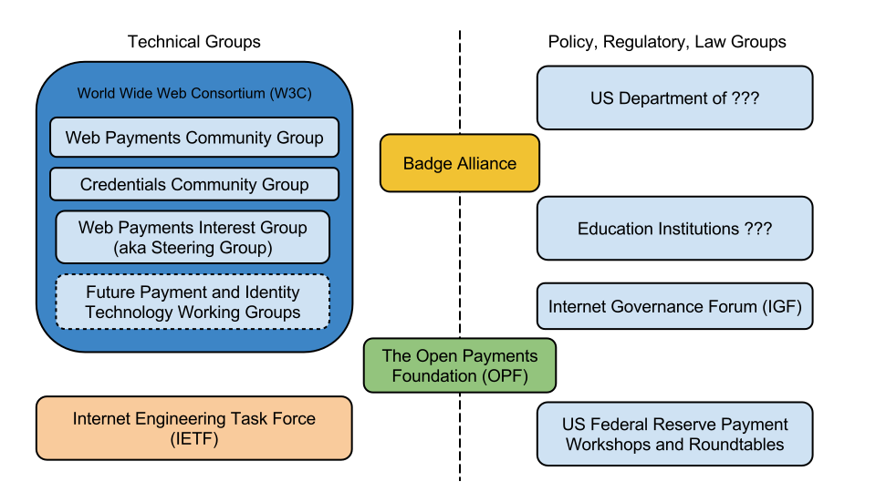

The Credentials Community Group
Pre-standardization work
Slide navigation:
Press → key to advance.
Toggle notes with the 2 key.
Zoom in/out: Ctrl or Command + +/-
This presentation was printed from an HTML page.
A fully interactive version of these slides containing examples and links to further resources can be found at:
https://web-payments.com/slides/2014/semtech/.
Credentials
What is a Credential?
A credential is a claim that represents a qualification, achievement, quality, or piece of information about an entity’s background such as a name, government ID, payment provider, home address, or university degree.
Credentials
Badge Alliance
Credentials
Accreditrust
- What are high-stakes credentials?
- Extensibility is important
- So are digital signatures
- Credentials and Web login - same problem
Credentials
Educational Testing Service (ETS)
- HiSET, GRE, TOEFL, Praxis - tens of millions of credentials per year
- Delivers digital assessments in over 130 countries
- Workforce retraining needs an upgrade
- Open standards for digital credentials
Credentials
CG
What is the Credentials CG?
- Pre-standards payment technology community
- Incubator for tech w/ standards-potential (unofficial)
- Open, inclusive, and transparent
- Discussion, Use Cases, Requirements, Specs
Collaborators
Where is active collaboration happening?

Brief
History
2010-2014 Credentials History
- 1965 - 2010 - Hellscape of "identity" failures
- 2010 - Credential technology initiative started
- 2011 - Web Payments CG Founded
- 2014 - Badge Alliance Founded
- 2014 - W3C Web Payments Workshop
- 2014 - Credentials CG spins out
(from Web Payments CG) - 2014 - UN IGF Workshop on Web Payments
- 2014 - W3C TPAC first Web Payments F2F
CCG
Focus
Do not boil the ocean
- Very tight focus by design
- Solve storing, transmitting, and verifying credentials on the Web
- Do not claim or try to "solve identity"
Use
Cases
Focus and priorities?
- Credentials CG Use Cases
- Design Criteria: data portability, data rights, flexible access control, legacy support, etc.
- Use Cases: verifiable claims, storage, transmission, pseudo-anonymity, composability, etc.
Tech
Stack
What technology is needed for credentials?

CCG ->
<- WPIG
CCG will support WPIG
- Credentials CG will provide input technology to WPIG for consideration
- Credentials CG will continue to experiment with pre-standardization credentials technology
- Credentials CG will continue to perform outreach and collect review input for WPIG consideration
Questions?
Where do you want to go from here?
- Briefly review use cases, roadmap
- Glance at pre-standards specifications
- Look at login demo, OpenBadges demo, TrueCred demo
- Input from Internet Governance Forum
Thanks
Learn more...
The End
This presentation will be posted online at:
Questions, comments or more info:
- Twitter: @manusporny
- G+: +Manu Sporny
- Email: msporny@digitalbazaar.com
This slide deck is based on HTML5 Slideshow by Marcin Wichary, Ernest Delgado, Alex Russell, and Brad Neuberg with CSS additions by Matthew Richmond and Manu Sporny.